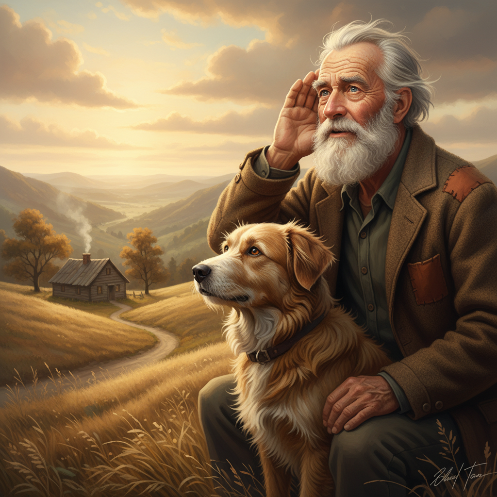

Capítulo 3: Un Regalo Inesperado
2026-02-19
Old Tom, con un suspiro nostálgico, dirigió su mirada hacia Willow. La alegría de la pequeña perro lo envolvía como una caricia suave y reconfortante.
"¿Qué te trae por aquí hoy, pequeña?" preguntó Old Tom, su voz cargada de calidez y sabiduría.
Willow se rascaba la cabeza con un miembro trasero mientras ladraba alegremente. Sus ojos brillaban con una mezcla de curiosidad y emoción. "¡Tengo tantas cosas que contar!" exclamó entre risitas.
Old Tom asintió suavemente, acariciando la peluda cabeza de Willow mientras ella le contaba sus aventuras. Hablaron de todo un poco: del río donde había encontrado una manzana caída, de los otros perros con quienes había jugado, y de las mariposas que había observado en el prado.
Willow finalmente se cansó de hablar y se estiró a su lado. "¿Y tú? ¿Nunca tienes nada para contarme?" preguntó curiosa, levantando una pata para acariciarle la cara.
Old Tom rió suavemente, recordando sus propias aventuras en el pasado. "Tengo tantas historias que podría llenarte todos los días de nuevo, pero me parece que hoy no soy yo quién necesita escuchar," replicó cariñosamente.
Mientras conversaban, Old Tom notó algo brillante entre las hojas del árbol. Era un collar antiguo, manchado y roto, sujeto a una cuerda fina. Willow se acercó curiosa y con cuidado lo agarró entre sus pequeñas mandíbulas.
Willow: "¿Qué es esto?"
Old Tom puso atención al objeto, notando las marcas en la correa que indicaban un uso constante. "Ese collar tiene un aspecto antiguo," comentó, tomando el collar con delicadeza.
Aparte de las marcas, también podía ver que el collar pertenecía a una gran perro. La pulsera estaba marcada por los dientes y la mandíbula de algún animal más grande, posiblemente un zorro o un lobo. "Parece que ha tenido cierta aventura," murmuró Old Tom.
Willow: "¿Quién será el dueño? ¿Podemos llamarlo?"
A pesar de su avanzada edad, Old Tom aún sentía una ligera esperanza. Miró a Willow y asintió. "Por supuesto, podemos intentarlo," respondió con suavidad.
Old Tom y Willow se pusieron en pie, caminando lentamente alrededor del árbol. Al principio, no obtuvieron ninguna respuesta, pero luego un ladrido bajo y gutural resonó entre los árboles. Se acercaron al lugar de donde provenía el sonido.
Willow: "¡Es él! ¡Parece que ha oído nuestro llamado!"
Mañana, nuevo capítulo.
Lo que dicen los lectores
Vuelvo cada día. Engancha de verdad.
El gancho del final me tiene enganchado.
Ya lo he recomendado. Muy bien escrito.